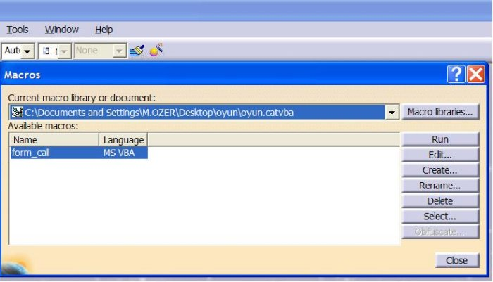

|
Mesut
Özer
Makine Müh., CATIA V5 Uzmaný
Mayýs 2006, Bursa
GÝRÝÞ
Günümüzdeki
tasarým yazýlýmlarý ilk yüklendiklerinde beraberlerinde kullanýcýnýn
birçok iþini görebilen tasarým araçlarý içerir. Ayný zamanda
tasarým yazýlýmlarý, her yeni versiyonda bir önceki versiyonda
yapýlan iþi kolaylaþtýran yeni araçlarý kullanýma sunar. Bununla
birlikte bu yazýlýmlarýnýn, her kullanýcýnýn tüm isteklerini
yerine getirmesi mümkün deðildir. Bir kullanýcý için mutlaka
olmasý gereken bir özellik, bir baþka kullanýcý için gereksiz
olabilir.
Tasarým
yazýlýmlarýný üreten firmalar bir çoðu, kullanýcýlarýn büyük
kýsmýný memnun edebilmek ve ayný zamanda rekabet için satýþ
fiyatýný minimum seviyede tutabilmek için modüler yapý çözümüne
baþvurur. Ayný zamanda bu yapý ile yazýlým firmasý kaynak
planlamasýný daha iyi yapabilir. Modüler yapý ile kullanýcý
da iþine yaramayan özellikler için para ödemez. Tasarým yazýlýmlarý
ayrýca kullanýcýya yazýlým içine bazý tanýmlamalar yapabilme
ve kodlar yazabilme fýrsatýný vererek, bu modüler yapýyý daha
da esnetebilir.
Her
kullanýcý kendi tanýmlamalarýný bu yazýlým üzerinde kullanabilmek
ister. Örneðin tasarýmýn gerçekleþtirilmesinde kullanýlacak
malzemelerin herhangi bir yerde deðil de, CAD dosyasýnýn içinde
tanýmlanmasý gibi daha çok veri tipindeki tanýmlamalar bu
grup içine dahil olurlar.
Durum
kullanýcýnýn kendi yazýlým kodunu tasarým yazýlýmý içine yerleþtirmek
olduðunda bulunmaz bir fýrsat ortaya çýkar. Örneðin, bir kalýp
tasarýmýnda, kalýplanacak malzemenin özelliðine baðlý olarak,
kalýp malzemelerinin ebatlarýnýn ve cinsinin otomatik seçilmesi
gibi daha çok karar mekanizmasýna sahip tanýmlamalar ile rutin
bir iþin birçok kez tekrarlanmasýnýn gerektiði durumlarda,
bu iþi otomotikleþtiren tanýmlamalar bu grup içine dahil edilebilir.
Ayrýca
bu tanýmlamalara ilave olarak, her tasarým yazýlýmýna özgü,
ilave fonksiyonlar olabilir. Bu fonksiyonlar daha önce yapýlmýþ
bir tasarýmýn tasarým bilgilerinin (knowledge) yakalanmasý
(capture), düzenlenmesi, paylaþýlmasý (share) ve uygulanmasý
(reapply) þeklinde olabilir. Bu kabiliyetlere sahip olan yazýlýmlara
öðrenen yazýlýmlar diyebiliriz. Bu öðretme iþini kullanýcý
yazýlým kabiliyetlerini kullanarak yapar.
Tasarým
yazýlýmý içinde yapýlan her tanýmlama ve kod, tasarýmýn belli
kriterlere uyan bir standart tasarým olmasýný da saðlar.
Tüm
bu katma deðerler tasarým sürelerinin kýsaltýlmasýný ve bu
süreçlerin hatasýzlaþtýrýlmasý saðlayan önemli birer parametre
olurlar. Tasarým süreçlerinin uzunluðu, hata kaynaklý geri
dönüþler ve standart olmayan çalýþmalar her zaman kaynak kaybý
anlamýna gelir. Bu kayýplarý ortadan kaldýrmak için günümüzde
kullanýcýya ve tasarým yazýlýmýna iþ düþmektedir.
CATIA
V5 üzerinde parametreler, kodlar ve knowledge
CATIA
V5 tasarým yazýlýmý, tanýmlama, kod yazýmý ve öðrenme fonksiyonlarýný
ve daha fazlasýný bir arada içeren bir yazýlýmdýr.
Kullanýcý
tanýmlamalarý parametre oluþturulmasý þeklindedir. Tasarým
içindeki herhangi bir parça için, istediðiniz özellikleri
içeren, kullanýcý tanýmlý ve formüle edilebilir parametreler
oluþturulabilir. Örneðin bir kalýp parçasý için "Malzeme"
isimli bir parametre oluþturup, bu parametre içine, bu parçanýn
yapýlacaðý malzemenin standart kodunu girebilirsiniz. Böylece
iliþkili iki veriyi (parça ve malzeme) ayný doküman içinde
saklamýþ olursunuz (CATPart dosyasýnda). Bu parametreler ayrýca
formüle edilebilir. Örneðin bir kalýp için alt ve üst plaka
için 1050 standardýndaki malzemeyi yazýlým otomatik olarak
seçerken, kesme çeliði için 2379 standardýndaki malzemeyi
otomatik olarak seçebilir.
CATIA
V5 içindeki kod yazýlýmý visual basic (VB) ya da CAA lisansý
(Component Application Architecture) üzerinde oluþturulabilir.
VB uygulamalarý son CATIA kullanýcýlarý tarafýndan kullanýlýrken,
CAA ise CATIA üzerinde yazýlým geliþtiren firmalar tarafýndan
kullanýlýr. Ayrýca scriptler ile (CATScript ve vbscript) programlama
yapmak da mümkündür. (Detaylý bilgi için www.3ds.com/plm-glossary
ve www.3ds.com/alliances
)
CATIA V5 içindeki öðrenme iþi ise knowledge modülleri ile
gerçekleþtirilir. Bu modüller, programlama bilgisi gerektirmeden,
çok basit ifadelerle tasarým bilgilerinin yakalanmasý, paylaþýlmasý
ve yeniden kullanýlmasýný saðlar. Detaylý bilgi için: www.3ds.com/products-solutions/plm-solutions/catia/all-products/domain/Product_Synthesis
CATIA V5 ve VBA
CATIA
içine kod yazýmýnda, kullanýcý tanýmlý formlarýnýn kullanýlabilmesi
nedeniyle VBA (Visual Basic for Applications) ya da VB (Visual
Basic) , scriptlere tercih edilir.
VBA yazýlým geliþtirme ortamý lisans gerektirmeyen bir ortamdýr.
Bununla birlikte VBA ile geliþtirdiðiniz kodlarý derleyip
(compile) "exe" dosya haline getiremezsiniz.
VB yazýlým geliþtirme ortamý ise VBA'ya ilave özellikler içerir
ve VB ile kodunuzu exe dosya haline getirebilirsiniz. VB kullanabilmek
için bu yazýlýmýn lisansýna sahip olmanýz gerekir. Bu nedenle
her kullanýcýnýn uygulayabilmesi için örneklerde VBA ortamý
seçilmiþtir.
VBA'nýn
avantajlarýný öðrenmek için aþaðýdaki site ziyaret edilebilir
www.microsoft.com/europe/vba/news/strategic_reviews/155.htm
CATIA'da
kod geliþtirme, CATIA nesnelerine (bir product, bir part,
bir pad vs) VBA yardýmýyla ulaþmayý, bu nesnelerin özelliklerini
(properties) deðiþtirmeyi ve nesne metotlarýný (methods) çaðýrmayý
içerir.
Nesne,
özellik ve metot kavramlarýný birer kod satýrý ile açýklayacak
olursak:
Set catia
= GetObject(, "CATIA.Application")
komut satýrý catia nesnesine eriþmemizi ve onu almamýzý saðlar.
(Eðer CATIA açýk deðilse, bu kod hata oluþturur bu durumda
CreateObject fonksiyonunu kullanmak gerekebilir)
Bu
nesneye eriþtikten sonra bu nesne ile ilgili diðer özellikler
alýnabilir. Örneðin "catia" nesnesine ait ActiveDocument
nesnesini alýp, daha sonra bu nesnenin Name özelliðini alarak,
aktif olan dökümanýnýn isim bilgisine ulaþýlabilir.
If InStr(1,
catia.ActiveDocument.Name, "OYUN.CATProduct") <
1 Then
komut satýrý aktif olan doküman adýnýn "OYUN.CATProduct"
olup olmadýðýný kontrol etmekte, buna göre program akýþý deðiþmektedir.
Bazý
durumlarda nesnelere ait metotlarý çaðýrmak gerekir. Örneðin
aktif olan dökümaný kaydetmek isteyebilirsiniz. Bu durumda
yapmanýz gereken save metodunu çaðýrmaktýr.
Catia.ActiveDocument.Save
komut satýrý aktif olan dökümaný kaydedecektir.
Yukarýdaki
örneklerdeki gibi CATIA içinde birçok özellik ve metot vardýr.
Bunlarýn hepsini bilmek mümkün olmadýðý gibi gerekli de deðildir.
CATIA'nin help dökümanlarý, tüm özelliklerin ve metotlarýn
listesini içerir. Ayrýca bu dökümantasyon, özellik ve metotlarla
ile ilgili detaylý bilgilerde saðlar. CATIA help dökümantasyonu,
programlama yapan CATIA kullanýcýlarýnýn baþvuru dökümaný
olarak kullanacaðý bir kaynaktýr.
CATIA'da
Macrolarýn Kullanýmý
CATIA
üzerinde yeni bir macro yazma ve varolan bir makroyu kullanmak
için "Tools-Macro-Macros" komut dizilimi ile açýlan
Macros penceresi kullanýlýr. Bu pencerede bulunan "Run"
butonu ile var olan bir macroyu çalýþtýrabilir, "Edit"
butonu ile bu macroyu deðiþtirebilir,"Create" butonu
ile yeni bir macro oluþturabilirsiniz.

Macros Penceresi
|